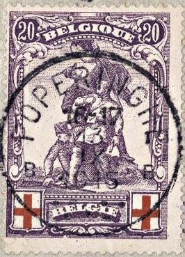
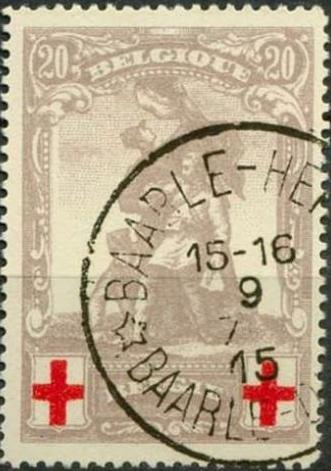
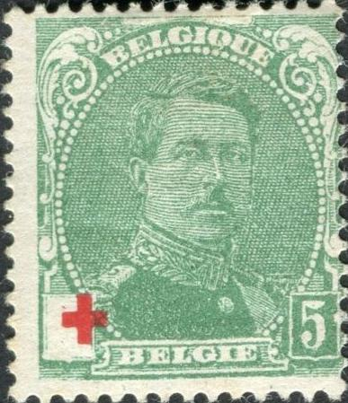
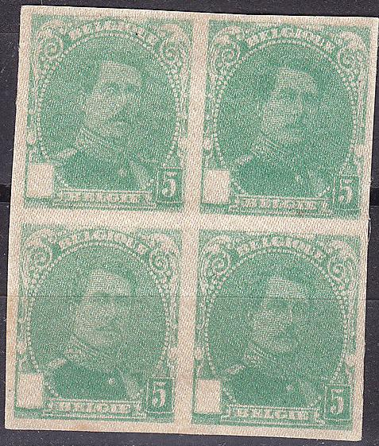
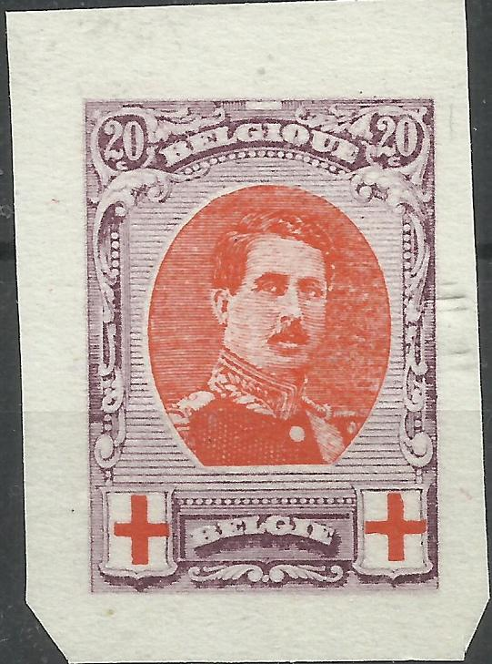
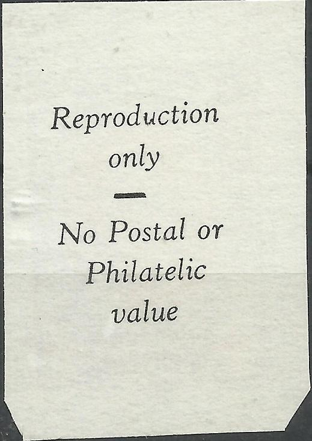

Either genuine or very dangerous forgeries.
Return To Catalogue - Belgium 1849-1865, King Leopold - Belgium 1866-1869 Lions - Belgium 1869-1892 - Belgium 1893-1911 - Belgium 1912 Arms and King Albert issue - Belgium 1915 onwards
Currency: 100 Centimes = 1 Franc
Note: on my website many of the
pictures can not be seen! They are of course present in the
catalogue;
contact me if you want to purchase it.
For stamps of Belgium before 1915 click here.
All the 'red-cross' issues of 1914-15 were sold by the Belgian Post in Le Havre (France) for double the value, where half of that amount was destined for the Red Cross. A further private bogus issue with the image of the King and the Queen in the values 5 c, 10 c and 20 c seems to exist, although I have not seen it.
Either genuine or very dangerous forgeries.

With "POPERINGHE" cancel, one of the post offices that
stayed open during the whole war.
5 c green 10 c red 20 c lilac
Value of the stamps |
|||
vc = very common c = common * = not so common ** = uncommon |
*** = very uncommon R = rare RR = very rare RRR = extremely rare |
||
| Value | Unused | Used | Remarks |
| 5 c | *** | *** | Number of stamps issued (source Serrane guide): 23214 |
| 10 c | *** | *** | Number of stamps issued: 14650 |
| 20 c | *** | *** | Number of stamps issued: 8663 |

(forgery with cancel, reduced size)
(forgeries)

Forgeries with forged cancel "ANTWERPEN 1 1 AL ANVERS 11-12
7 X 1914" (also with inverted date "11-12 X 7
1914").
These stamps are quite rare (see printed quantities above).
However, enormous quantities of forgeries exist. Some forgeries
can easily be recognized by the "Q" of
"BELGIQUE", this should be a real "Q", but in
the forgeries it resembles more an "O". Perforated and
imperforate forgeries with or without forged cancels exist. The
above stamps are such forgeries.
According to www.bondskeuringsdienst.nl/BKD.pps, these forgeries
were made by the Belgian forger Verschueren from Antwerp (the
printer who printed the original stamps), however with different
printing plates. The 1915 red cross issue (King Albert, small
size) was also forged by him. These forgeries also exist on
letter (a letter adressed to Monsieur Levionnois 15, Rue de
Charleroi Charleroi can be found on the above mentioned website)
with a full set of all six forgeries. I've also seen a forged
letter with all three above stamps and the 1915 King Albert small
sized stamps (all three) on a letter to 'Monsieur Lauwers 33,
Avenue Louise Bruxelles' with the same cancel as shown above
"ANTWERPEN ANVERS 11-12 7 1914". See also
http://postzegelsdemerode.be/NL/vervalsingenf.html for more
information.
More dangerous forgeries also exist, very closely resembling the
original stamps. These were made with similar printing plates as
those used for the genuine stamps.

Forgery with "ANTWERPEN 9-10 7 X 1914 ANVERS" cancel.
Also a forgery with a "BAARLE-HERTOG BAAR LE-DUC"
cancel.
5 c green 10 c red 20 c lilac
Value of the stamps |
|||
vc = very common c = common * = not so common ** = uncommon |
*** = very uncommon R = rare RR = very rare RRR = extremely rare |
||
| Value | Unused | Used | Remarks |
Small size |
|||
| 5 c | * | * | |
| 10 c | ** | ** | |
| 20 c | *** | *** | |

There are two types of the 5 c, this type I has the pearls of the
ellipse just below the letters "BE" of
"BELGIQUE" not joined together. Both types have the
word "BELGIQUE" placed higher than in the 'simple'
forgeries. However, dangerous forgeries also exist with these
distinguishing characteristics.

There are two types of the 5 c, this type II has the pearls of
the ellipse just below the letters "BE" of
"BELGIQUE" joined together. However, dangerous
forgeries also exist with these distinguishing characteristics.
By the way, the cancel "ANTWERPEN 9-10 7 X 1914 ANVERS"
looks highly suspicious to me (it is the same as in the forgeries
of the previous set).


There are two types of the 10 c, type I has the upper right
containing rectangle of the cross intact. Type II has this corner
shaved off. The word "BELGIQUE" is placed higher than
in the 'simple' forgeries. However, dangerous forgeries also
exist with these distinguishing characteristics. Here Type I on
the left and type II on the right.

There are two types of the 20 c, this is type I. Both types have
"BELGIQUE" placed slightly higher than in the 'simple'
forgeries. However, dangerous forgeries also exist with the same
distinguishing characteristics as the genuine stamps.

There are two types of the 20 c, this type II has the pearls of
the ellipse to the right and slightly above the eyes of the King
joined to each other and to the pearl of the upper right
ornament. However, dangerous forgeries also exist with these
distinguishing characteristics.
I have seen forgeries of the small sizes stamps (all values).
There are even different types of forgeries. According to
www.bondskeuringsdienst.nl/BKD.pps, these forgeries were made by
the Belgian forger Verschueren from Antwerp (the printer of the
original stamps). The 1914 war issue (statue) was also forged by
him. These forgeries also exist on letter (a letter adressed to
Monsieur Levionnois 15, Rue de Charleroi Charleroi can be found
on the above mentioned website). I've also seen a forged letter
with all three above small stamps and the 1915 Merode stamps (all
three) on a letter to 'Monsieur Lauwers 33, Avenue Louise
Bruxelles' with the cancel 'ANTWERPEN ANVERS 11-12 7 1914'. See
also http://postzegelsdemerode.be/NL/vervalsingenf.html for more
information.
The 'simplest' forgeries of the small type only have 3 pearls in
between the word "BELGIE" and the value label on the
right. The genuine stamps have 3 1/2 pearls. Imperforate stamps,
stamps with double cross, on different paper etc are all
forgeries.
However, very dangerous forgeries also exist. The book of
Vervisch and Rompaey lists them all: 'De vervalsingen van de rode
kruiszegels van 1914'.
Vervisch lists some 'simple' forgeries. There are three of such simple forgeries for each value. Apparently, all three forgery types were printed in the same sheet.

First 'Simple' forgery according to Vervisch of the 5 c; the word
"BELGIQUE" is placed too low, there are only 3 pearls
between the word "BELGIE" and the "5". The
bottom of the "Q" is pointing to the left. The pearl to
the left of "B" of "BELGIE" in the curved
ornament is half missing. The impression is clearer than in the
genuine stamps.


Second 'Simple' forgery according to Vervisch of the 5 c; the
word "BELGIQUE" is placed too low, "Q" of
"BELGIQUE" is closed. The impression is clearer than in
the genuine stamps. In my opinion, there is always a broken pearl
below the "E" of "BELGIQUE".

Third 'Simple' forgery according to Vervisch of the 5 c; the word
"BELGIQUE" is placed slightly too low, "Q" of
"BELGIQUE" is closed. There are only 3 pearls between
the word "BELGIE" and the "5". There is a
white line on the left cheek of the King (from his point of
view).
First 'Simple' forgery according to Vervisch of the 10 c; the
word "BELGIQUE" is placed too low, "Q" of
"BELGIQUE" is closed. The "1" of
"10" is badly done. The red cross is placed too low (in
the genuine 10 c stamps, it is always printed in the same
location).
First 'Simple' forgery according to Vervisch of the 20 c has the word "BELGIQUE" too far down. The "Q" of this word is closed.

Second 'Simple' forgery according to Vervisch of the 20 c; 3
pearls in the lower right corner (in between "BELGIE"
and "20"), "Q" of "BELGIQUE" has
almost no tail, this letter has a scratch at the left hand side.
In my opinion, the "B" of "BELGIQUE" has no
serifs.


Third 'Simple' forgery according to Vervisch of the 20 c;
"B" of "BELGIQUE" has a dent in the bottom.
This word is placed too low.
All three types of the 'Simple' forgeries printed together on one
sheet, proving that these forgeries were made at the same time.
Type I is the second one in the top row.
A bunch of 'phantasy' products, imperforate stamps, crossed
omitted, double crosses etc.

A reprint on silk.


5 c green and red 10 c red 20 c lilac and red
Value of the stamps |
|||
vc = very common c = common * = not so common ** = uncommon |
*** = very uncommon R = rare RR = very rare RRR = extremely rare |
||
| Value | Unused | Used | Remarks |
Large size |
|||
| 5 c | * | * | |
| 10 c | ** | ** | exists perf 14 or 12x14 |
| 20 c | *** | *** | exists perf 14, 12 or 14x12 |
Although my Senf catalogue says that there are forgeries (reprints) of these stamps, I have not seen them. Since these stamps were printed by Waterlow Brothers & Layton, which later became Waterlow & Sons (and were not printed by Verschueren as the previous two issues), 'reprints' might not exist.
Imperforate stamps.
 
An imperforate reprint from later date? Inscription
"Reproduction only No Postal or Philatelic value" on
the back.

{kind=link}
{kind=link}
{kind=link}
{kind=link}
{kind=link}
{kind=link}
{kind=link}